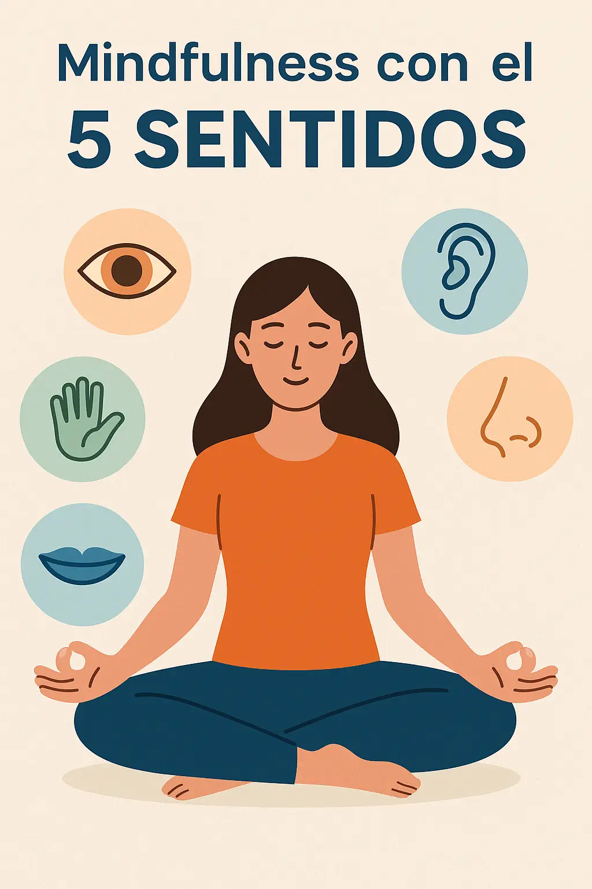

Te cuesta estar presente? Prueba el método de los 5 sentidos
¿Te cuesta mantenerte en el presente? El método de los 5 sentidos es una técnica de mindfulness muy efectiva para frenar la mente y volver al aquí y ahora. En momentos de estrés o ansiedad, nuestra mente tiende a quedarse atrapada en pensamientos repetitivos o preocupaciones futuras. Esta técnica te ofrece una manera práctica de reconectar con tu cuerpo y tu entorno en segundos.
¿Qué es el método de los 5 sentidos?
Es una práctica de atención plena que consiste en conectar con tu entorno a través de tus cinco sentidos: vista, oído, tacto, olfato y gusto. Esta técnica ayuda a calmar la mente, reducir la ansiedad y mejorar el enfoque. Se conoce también como ejercicio 5-4-3-2-1 por la secuencia con la que se realiza.
Paso a paso del ejercicio 5-4-3-2-1
- 5 cosas que puedas ver: observa los colores, formas y texturas a tu alrededor.
- 4 cosas que puedas tocar: siente la temperatura, la superficie de tus manos o la ropa.
- 3 cosas que puedas oír: enfócate en sonidos cercanos o lejanos.
- 2 cosas que puedas oler: detecta aromas del ambiente, tu perfume o incluso el aire.
- 1 cosa que puedas saborear: puede ser un sorbo de agua, un dulce o simplemente percibir el sabor de tu boca.
¿Por qué funciona esta técnica?
El ejercicio redirige tu atención de los pensamientos al cuerpo, lo que interrumpe el bucle mental. Estimula el sistema nervioso parasimpático, promoviendo la relajación y bajando la activación del estrés. Además, al practicarlo con frecuencia, entrenas tu mente para volver al presente con mayor facilidad.
Consejos para practicarlo mejor
- Realízalo al menos una vez al día, especialmente si sientes ansiedad o desconexión.
- Hazlo lentamente y sin juzgar tus percepciones.
- Combínalo con respiraciones profundas para potenciar su efecto calmante.
- Practícalo en distintos lugares: casa, trabajo o en la calle.
¿Cuándo usarlo?
Este método es ideal cuando te sientas abrumado, desconectado o con pensamientos acelerados. También puede ayudarte en momentos puntuales como antes de una reunión, al iniciar el día o incluso antes de dormir.
Más recursos para estar presente
¿Te interesa seguir explorando técnicas para frenar la mente y reducir la ansiedad? Aquí tienes más recursos de nuestra web:
- Mindfulness diario: empieza con 5 minutos
- Cómo dejar de sobrepensar antes de dormir
- Cómo calmar la mente en 60 segundos
- Técnicas prácticas de bienestar mental
¿Listo para probarlo? Haz el ejercicio de los 5 sentidos ahora y siente el cambio en tu mente.